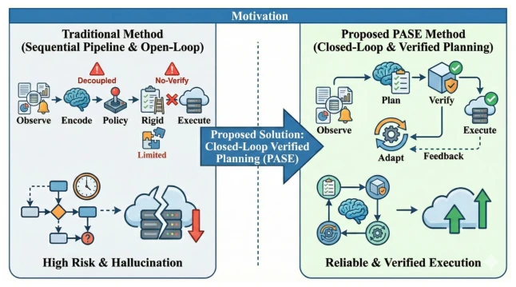
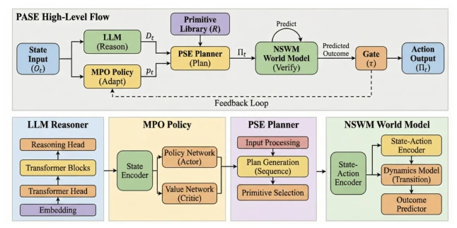

This paper upgrades cloud fault self-healing from "selecting actions" to "writing programs". The PASE framework is quite interesting, using LLMs to generate multi-step recovery plans, then simulating and verifying with a neuro-symbolic world model, and finally optimizing prompts with DRL. Although it solves the risk of "blind execution" in traditional methods, the NSWM simulation overhead is significant, and the LLM still requires offline fine-tuning, so real-machine deployment might face bottlenecks. However, compared to those that only treat LLMs as feature extractors [11], this puts reasoning capabilities to practical use. It attempts to find a balance between generative AI and system reliability, but at the cost of introducing complex verification loops, and real-time challenges remain.
Cloud systems are becoming increasingly complex, and microservice dependency chains collapse when broken. Existing methods rely either on rules [31] or on serial combinations of LLM+DRL [11]. The problem lies in that LLMs are often used as passive encoders, and DRL can only select within preset action spaces, lacking planning capabilities for complex faults. Moreover, without pre-execution verification, it is prone to executing fragile strategies [12, 16]. The authors aim to solve this "dare to think but dare not verify" problem, turning recovery into neuro-symbolic program synthesis. Especially when facing unknown faults, traditional methods have poor generalization, and existing hybrid architectures are often simple concatenations, failing to fully utilize the reasoning potential of LLMs.

Figure 1: Motivation. From state→action selection without verification (late, risky recovery) to plan→verify→adapt: PASE synthesizes recovery plans with an LLM planner, screens them via a neural-symbolic world model, and improves planning through DRL-based meta-prompt adaptation.
PASE is divided into three steps. First, the LLM converts log metrics into semantic descriptions, then combines with a recovery primitive library to generate a multi-step plan Πt. Second, NSWM simulates plan execution, predicts state changes and metrics, calculates a feasibility score F(Πt), and retries if it fails. Finally, MPO uses the SAC algorithm to optimize prompt embeddings pt, guiding the LLM to generate better plans. The core is a "Reasoning-Planning-Verification-Adaptation" closed loop, not a simple Perception-Action. Specifically, the PSE module is based on LLaMA-2-7B, fine-tuned via LoRA, ensuring it can understand system topology. NSWM adopts a 3-layer MLP, pre-trained on historical data, used for low-cost simulation. MPO searches for the optimal prompt in the embedding space via reinforcement learning, rather than directly fine-tuning LLM weights, which greatly reduces online adaptation costs. The entire process forms a closed loop, ensuring plans are not only generated quickly but also run successfully.

Figure 2: The overview of PASE. From observation Ot to verified recovery: Ot →Dt →pt → Πt →F(Πt). The recovery plan Πt is executed only when F(Πt) > τ; the loop is trained via NSWM pre-training, MPO warm-up, and joint fine-tuning.
Used the OpenStack fault injection dataset. Baselines include IFSHM, rule systems, etc. PASE recovery time shortened by 40%, detection F1 reached 0.94. Ablation experiments prove NSWM and MPO are both critical; removing NSWM causes a significant drop in safety. Facing new faults, MPO converges in 15 interactions, faster than full fine-tuning. However, NSWM inference takes 42ms, posing pressure on real-time performance. Experiments also compared different world model architectures; the neuro-symbolic hybrid model achieved the best balance in AUC and efficiency.